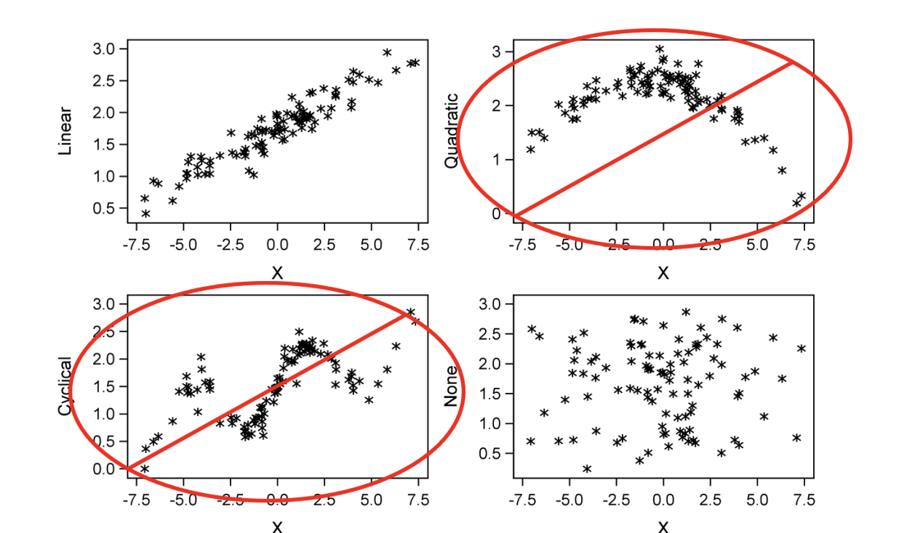
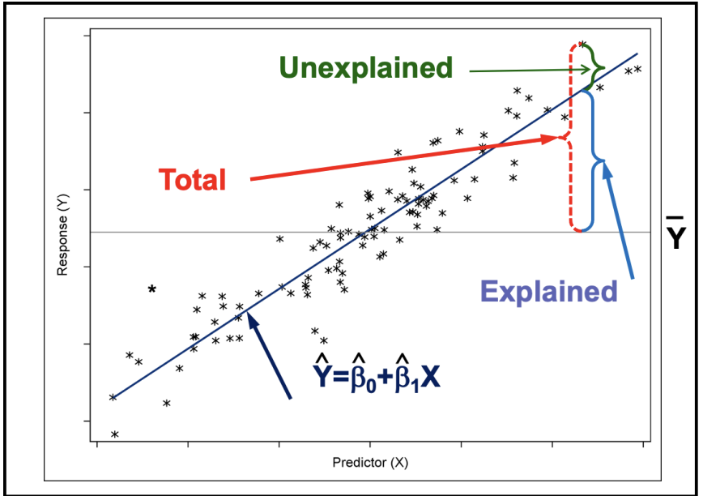
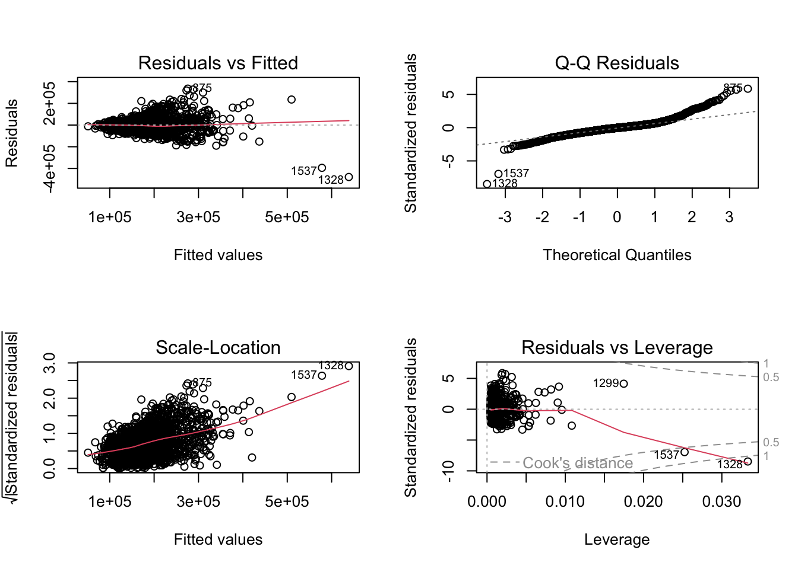

Code
library(reticulate)
use_condaenv("msa")Yang Chen
June 30, 2023
July 23, 2023
Pearson’s correlation measures linear relationships for continuous variables.

Parameter representing population correlation is \(\rho\) and is estimated by \(r\)
\(H_0: \rho = 0\)
\(H_a: \rho \neq 0\)
However, rejecting \(H_0\) only means that \(\rho\) is not exactly 0 so we need to see if the relationship is practically significant.
Note that outliers affect correlation and correlation does not imply causation.
[1] 2051 82[1] 879 82
Pearson's product-moment correlation
data: train$Gr_Liv_Area and train$Sale_Price
t = 44.185, df = 2049, p-value < 2.2e-16
alternative hypothesis: true correlation is not equal to 0
95 percent confidence interval:
0.6756538 0.7200229
sample estimates:
cor
0.698509 Year_Built Total_Bsmt_SF First_Flr_SF Gr_Liv_Area Sale_Price
Year_Built 1.0000000 0.4037104 0.3095407 0.2454325 0.5668889
Total_Bsmt_SF 0.4037104 1.0000000 0.8120419 0.4643838 0.6276502
First_Flr_SF 0.3095407 0.8120419 1.0000000 0.5707205 0.6085229
Gr_Liv_Area 0.2454325 0.4643838 0.5707205 1.0000000 0.6985090
Sale_Price 0.5668889 0.6276502 0.6085229 0.6985090 1.0000000We can also generate a plot matrix of the variable associations with pairs:
array([[1. , 0.69850904],
[0.69850904, 1. ]])array([[1. , 0.40371038, 0.3095407 , 0.24543253, 0.56688895],
[0.40371038, 1. , 0.81204187, 0.46438378, 0.62765021],
[0.3095407 , 0.81204187, 1. , 0.57072054, 0.60852293],
[0.24543253, 0.46438378, 0.57072054, 1. , 0.69850904],
[0.56688895, 0.62765021, 0.60852293, 0.69850904, 1. ]])A strong correlation does not mean that a change in one variable causes a change in the other. Correlations can be misleading if both variables are affected by other variables.
\[ y = \beta_0 + \beta_1x_i + e_i \]
In SLR, correlation is not equal to slope. Two pairs of variables can have the same correlation coeff, but different linear relationships.
We are trying to explain variation in the response variable. We can’t explain all of it due to random, uncontrollable error but we can model it.

With linear regression, we are trying to minimize a loss function called sum of squared errors. This is essentially measuring the difference between our predictions and the actual response values we observed in the data.
We square the differences so they don’t cancel each other out and we have a loss that we can optimize our model on.
\[ SSE = \sum_{i=1}^{n} (y_i - \hat{y}_i) ^2 \]
SSE makes up the amount of unexplained variability in our model.
\(H_0: \beta_1 = 0\)
\(H_a: \beta_1 \neq 0\)
For SLR, the global F-Test, parameter t-test and the test of Pearson’s correlation are all equivalent.
When we can’t reject the null hypothesis we are saying that the independent variable doesn’t explain any of the variability in the response.
There is also an assumption of no perfect collinearity. Under multicollinearity, we can’t believe in our parameter estimates. The parameter estimates would be biased as there are multiple variables supplying the same information.

Call:
lm(formula = Sale_Price ~ Gr_Liv_Area, data = train)
Residuals:
Min 1Q Median 3Q Max
-478762 -30030 -1405 22273 335855
Coefficients:
Estimate Std. Error t value Pr(>|t|)
(Intercept) 14045.872 3942.503 3.563 0.000375 ***
Gr_Liv_Area 110.726 2.506 44.185 < 2e-16 ***
---
Signif. codes: 0 '***' 0.001 '**' 0.01 '*' 0.05 '.' 0.1 ' ' 1
Residual standard error: 57430 on 2049 degrees of freedom
Multiple R-squared: 0.4879, Adjusted R-squared: 0.4877
F-statistic: 1952 on 1 and 2049 DF, p-value: < 2.2e-16